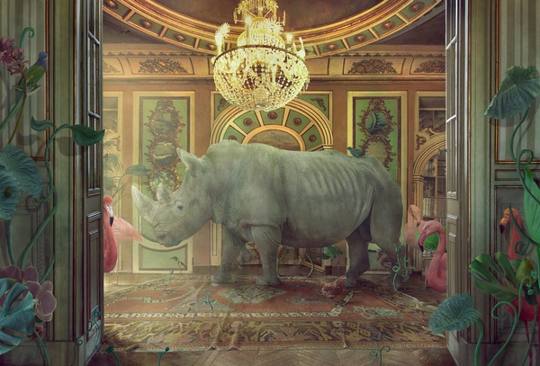
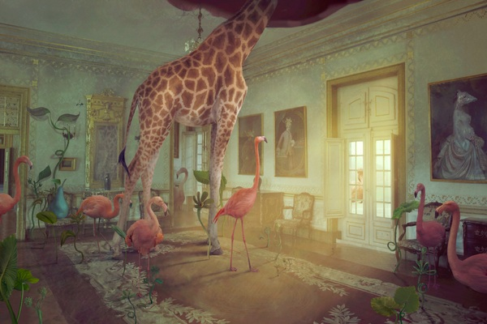
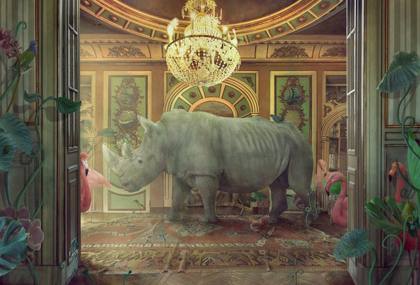
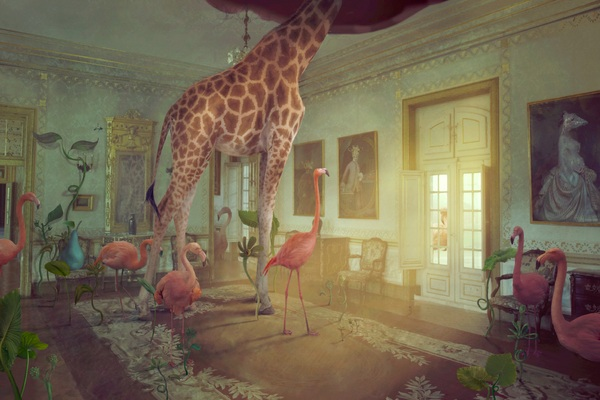

In the Palace
While plush carpets and vibrant tapestries create an air of grandeur, a sense of unease lingers beneath the surface, hinting at a deeper story waiting to be told.
Here, the true residents are animals – both real and fantastical hybrids, scompanied by human characters.
They play a central role and exist without hierarchy, in contrast to their treatment in the real world.
These outsiders, freed from societal norms, become symbolic figures, questioning the power dynamics and the cyclical nature of time.
The settings in these worlds exist in historical interiors or in outer space, and they are not bound by a specific time or place, but exist independently.


 


